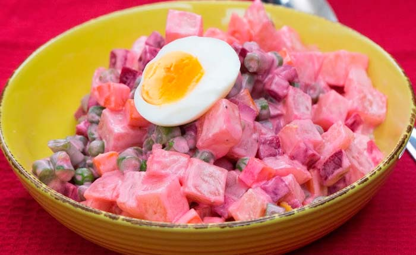
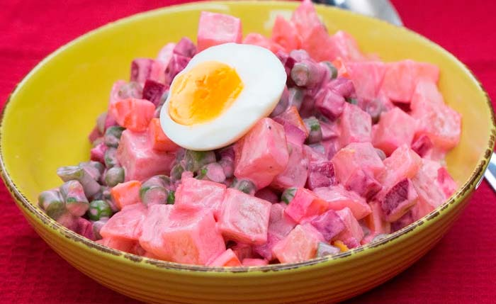

Ingredientes
- 8 papas grandes
- 4 zanahorias
- 3 beterragas
- 250 gr de arvejas
- 250 gr de vainitas
- 250 gr de atun
- 3 huevos
- 1 limon (el jugo)
- Mayonesa
- Sal
- Pimienta
- Culantro al gusto
Utensilios
- Cuchillo
- Bowl
- Cuchara
- Exprimidor
La Ensalada Rusa es una de las ensaladas más consumidas en el mundo y muchas de sus versiones obedecena las costumbres de cada país en donde es consumida. En nuestro país, se caracteriza por llevar beterraga, rica en vitaminas A y C. ¿Te animas a prepararla?
Lo primero que haremos sera lavar muy bien todos los ingredientes como las papas, las zanahorias, las beterragas, las vainitas, huevos, y cocinarlos. Luego en un bold vamos colocando los ingredientes arteriormente nombrados en cuadritos, agregamos las arvejas cocinadas, el atun esmenusado y los huevos. Por encima agregamos el jugo de limon, mayonesa, sal, pimienta y cilantro. Todo al gusto. Revolvemos muy bien y servimos.
 



El seco de carne o también conocido como guiso de res es un platillo típico de Perú. Como bien lo dice su nombre, se trata de un guiso sustancioso lleno de mucho sabor peruano, ya que lleva varios ajíesautóctonos de nuestro país. Se acostumbra a consumirse como plato principal acompañado de un poco de arroz.
 Sierra
Sierra
 Platillos
Platillos

La chicha de jora o Aqha en quechua, es una bebida fermentada oriunda de Sudamericana, para ser más detallados difundida en Perú, Bolivia y Ecuador. Presenta diversas variedades según la región donde lo preparan, pero la base de su preparación es principalmente la Jora, es decir; maiza malteado.
Sierra
 Bebidas
Bebidas